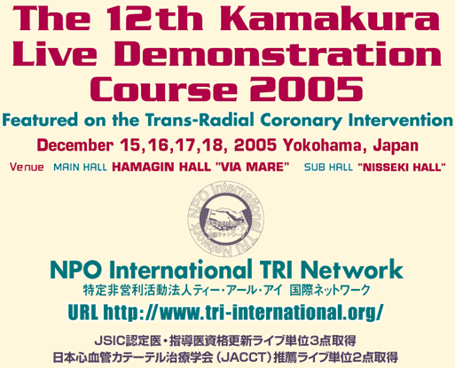

last up date 05.12.13
|

|
Director
of Organizing Committee / Operator
Shigeru Saito, M.D.
Shonan Kamakura General Hospital
Member
of Organizing Committee |
|
Naoto
Aoki, M.D.
Yamato Seiwa Hospital
Takashi Ashikaga, M.D.
Yokohama Minami Kyosai Hospital
Naoya Fujita, M.D.
Eastern Japan Medical Center
Naoto Fukuda, M.D.
Minami Machida Hospital
Nobuyuki Hashimoto,
M.D.
St.Marianna University Yokohama-City
Seibu Hospital
Tetsuya Hata, M.D.
Kyoto Kujo Hospital
Kiyoshi Hibi, M.D.
Yokohama City University School Medical Center
Kazuhira Hibiya, M.D.
Sekishindou Hospital
Yuji Ikari, M.D.
Tokai University School of Medicine
Yoshifumi Kan, M.D.
Shin-Yukuhashi Hospital
Ken-ichi Kato, M.D.
Yokohama Rosai Hospital
Kazuo Kimura, M.D.
Yokohama City University School Medical Center
Toshiro Kurosawa, M.D.
Machida Municipal Hospital
Motomaru Masutani, M.D.
Hyogo College of Medicine |
Ichiro
Michishita, M.D.
Yokohama Sakae Kyosai Hospital
Yusuke Miyashita, M.D.
Shonan Kamakura General Hospital
Akira Miyamoto, M.D.
Kikuna Memorial Hospital
Yasuyuki Mochida, M.D.
Omori Red Cross Hospital
Takahiro Nishida, M.D.
Odawara Cardiovascular Hospital
Kazuhiro Oyamada, M.D.
Keiyu Hospital
Hideaki Sakai, M.D.
Nagasaki Cardiovascular Hospital
Masayoshi Sakakibara,
M.D.
Shin-Katsushika Hospital
Katsuhiko Sato, M.D.
Hokko Memorial Hospital
Akihiko Takahashi, M.D.
Takahashi Hospital
Hideyuki Takahashi, M.D.
Kotobukikai Tominaga Hospital
Saeko Takahashi, M.D.
Shonan Kamakura General Hospital
Shinji Tanaka, M.D.
Shonan Atsugi Hospital
Shin-ichi Tohyama, M.D.
Kanagawa Cardiovascular and Respiratory Center |
|
| International
Guest Faculty |
John
T.Coppola, M.D.
Saint Vincent's Hospital & Medical Center, USA
Alexander Doganov, M.D.
National Heart Hospital, Bulgaria
Fina Mauri i Ferré,
M.D.
Hospital Universitari Germans Trias i Pujol, Spain
Eulogio Garcia, M.D.
Jefe de Cardiologia Intervensionista Hospital
General Universitario Gregorio Maranon, Spain
Junbo Ge, M.D.
Zhongshan Hospital, Fudan University, China
Hyeon-Cheol Gwon, M.D.
Samsung Medical Center, Korea
Martial Hamon, M.D.
Service des Maladies du Coeur et des Vaisseaux,
Centre Hospitalier Universitaire de Caen, France
Kyoo-Rok Han, M.D.
Hallym Kangdong Sacred Heart Hospital, Korea
Taek-Jong Hong, M.D.
Busan University Hospital, Korea
Myung-Ho
Jeong, M.D.
Chonnam
National University Hospital, Korea
Ferdinand Kiemeneij, M.D.
Amsterdam Department of Interventional Cardiology
(ADIC), Onze Lieve Vrouwe Gasthuis-OLVG, Netherlands, The
Netherlands
Jong Hyun Kim, M.D.
SuYoung HanSeo Hospital, Korea
Kee-Sik Kim, M.D.
Daegu Catholic University Medical Center, Korea
|
Mitchell
W. Krucoff, M.D.
Duke Clinical Research Institute, USA
Seung-Hwan Lee, M.D.
Wonju Christian Hospital, Korea
Josef Ludwig, M.D.
University of Erlangen-Nurnberg, Germany
Quang Tuan Nguyen, M.D.
Vietnam Heart Institute Bach Mai Hospital, Vietnam
Tejas Madhusudan Patel,
M.D.
Sterling Hospital, India
Ki-Bae Seung, M.D.
Kangnam St. Mary's Hospital, Korea
Rurus
Suryawan, M.D.
Dr.
Soetomo General Hospital, Indonesia
Wasan
Udayachalerm, M.D.
King Chulalongkorn Memorial Hospital, Thailand
Lefeng Wang, M.D.
Beijing Chaoyang Hospital, China
Chiung Jen Wu, M.D.
Chang Gung Memorial Hospital, Taiwan
Chen Xiaomin, M.D.
Ningbo No.1 Hospital, China
Han Yaling, M.D.
ShenYang Beifang Hospital, China
Jung-Han Yoon, M.D.
Yonsei University, Wonju College of Medicine, Korea
Lu Shu Zheng, M.D.
Beijing Anzhen Hospital, China |
Japanese
Guest Faculty |
Osamu
Arasaki, M.D.
Tomishiro Central Hospital
Yasushi Asakura, M.D.
Keio University School of Medicine
Yutaka Hikichi, M.D.
Saga Medical School Hospital
Junko Honye, M.D.
Nihon University School of Medicine
Naoto Inoue, M.D.
Kyoto Second Red Cross Hospital
Honin Kanaya, M.D.
Ishikawa Prefectural Central Hospital
Takaaki Katsuki, M.D.
Jichi Medical School
Noriko Makiguchi, M.D.
National Obihiro Hospital
Toshiyuki Matsumura,
M.D.
Kumamoto Rosai Hospital
|
Kazuaki
Mitsudo, M.D.
Kurashiki Central Hospital
Sunao Nakamura, M.D.
Shin-Tokyo Hospital
Kazuyoshi Ohata, M.D.
Kofu Kyoritsu Hospital
Satoru Sumitsuji, M.D.
Rinku General Medical Center
Takashi Uchiyama, M.D.
Takase Clinic
Kenji Wagatsuma, M.D.
Toho University School of Medicine Omori Hospital
Circulatory Organ Center
Yoshiaki Yokoi, M.D.
Kishiwada Tokushukai Hospital |
Young
Generation Ambitious Operator |
Hiroshi
Ohta, M.D.
Juntendo University School of Medicine
Hiroshi Okumura, M.D.
Hokuto Cardiovascular Hospital
Hiroki Uehara, M.D.
Yokohama City Minato Red Cross Hospital
|
Honghua
Ye, M.D.
Shonan Kamakura General Hospital
Fuminobu Yoshimachi, M.D.
Aomori Prefectural Central Hospital |
|
MAIN
HALL: HAMAGIN
HALL"VIA MARE"
3-1-1
Minatomirai, Nishi-ku, Yokohama, Kanagawa, Japan
TEL: 045-225-2173
SUB
HALL: "NISSEKI
HALL"
1-1-8
Sakuragi-cho, Naka-ku, Yokohama, Kanagawa, Japan
TEL: 045-683-2810
By Train:
Take JR Line or
Yokohama Municipal Subway and get off Sakuragicho station.
Take Minato Mirai Line and get off Minato Mirai station.
By Car:
There is no parking lot in this hall. |
|
Shonan
Kamakura General Hospital
Research Center
Division of Cardiology & Catheterization Laboratories
1202-1, Yamazaki, Kamakura, Kanagawa, 247-8533 Japan
Tel.:81-467-461717, Fax.:81-467-461907
E-mail address : saito@shonankamakura.or.jp |
|
|